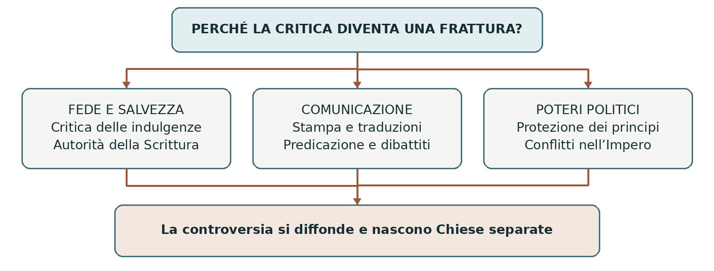
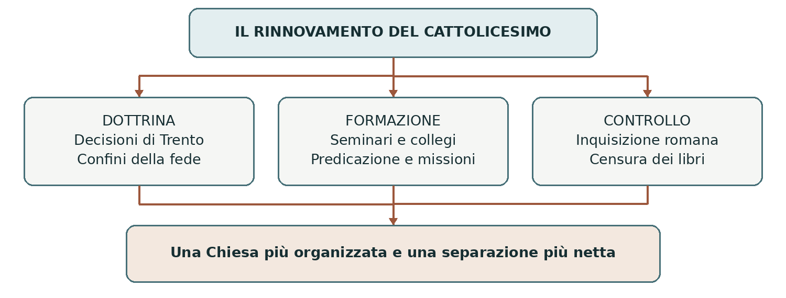
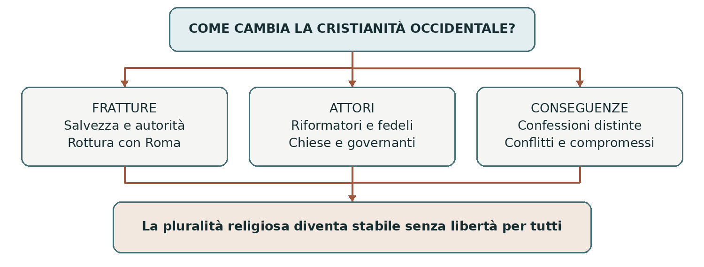

L’EUROPA NELL’ETÀ MODERNA
Riforma e Controriforma
Fede autorità e divisione della cristianità occidentale
Nel Cinquecento la cristianità dell’Europa occidentale si divise in confessioni diverse. La Riforma protestante contestò l’autorità del papa e alcuni fondamenti della dottrina cattolica. La Chiesa di Roma rispose definendo più nettamente la propria dottrina, rinnovando la formazione del clero e combattendo il dissenso. Questi processi modificarono anche governi, scuole, famiglie e rapporti sociali.
0 Domanda generatrice
Perché una controversia sulla salvezza dell’anima diventò una frattura politica e culturale dell’Europa? Nel XVI secolo la religione organizzava la vita collettiva. Discutere chi potesse insegnare la vera fede significava discutere anche chi avesse il diritto di governare comunità, amministrare beni e regolare comportamenti.
In sintesi La divisione religiosa ebbe effetti profondi perché fede, istituzioni e potere erano strettamente legati. Per comprenderla occorre ricostruire il mondo precedente alla rottura.
1 Il mondo precedente
All’inizio del Cinquecento la maggior parte dell’Europa occidentale riconosceva l’autorità religiosa del papa. Parrocchie, monasteri, confraternite e ordini religiosi scandivano il calendario, offrivano assistenza e partecipavano all’istruzione. Vescovi e abbazie possedevano terre; il papa era anche sovrano dello Stato della Chiesa. Questa presenza non significava che tutti condividessero le stesse pratiche o che mancassero conflitti con i poteri laici.
L’Europa non era però interamente cattolica: a oriente erano presenti le Chiese ortodosse, separate da Roma da secoli; vivevano inoltre nel continente comunità ebraiche e musulmane. La Riforma spezzò soprattutto l’unità della cristianità latina occidentale, non un’inesistente uniformità religiosa di tutta l’Europa.
Molti cristiani chiedevano da tempo un rinnovamento. Criticavano l’accumulo di incarichi ecclesiastici, l’assenteismo di alcuni vescovi, la scarsa preparazione di parte del clero e l’uso delle cariche per interessi familiari. Accanto agli abusi esistevano esperienze intense di spiritualità e assistenza. Presentare tutta la Chiesa come corrotta impedisce di capire perché il desiderio di riformarla fosse vivo anche al suo interno.
In sintesi La richiesta di rinnovamento precedette Lutero. La questione decisiva sarebbe diventata chi avesse l’autorità per realizzarlo e su quali basi.
2 Le fratture
Il problema delle indulgenze
Per un cristiano del tempo la salvezza era una questione concreta e urgente. Nella dottrina cattolica il peccato comportava una colpa e delle pene. Il perdono della colpa non cancellava necessariamente ogni pena temporale: l’indulgenza era la remissione di questa pena per peccati già perdonati, alle condizioni stabilite dalla Chiesa. Non era, nella definizione dottrinale, un permesso di peccare o l’acquisto del perdono futuro.
Nella pratica, tuttavia, alcune campagne legavano l’indulgenza a un’offerta di denaro e la predicazione poteva farla apparire come una garanzia di salvezza. La campagna contro cui intervenne Lutero contribuiva al finanziamento della basilica di San Pietro e si intrecciava con gli interessi finanziari dell’arcivescovo Alberto di Brandeburgo. La promessa spirituale e la raccolta di denaro alimentavano una tensione evidente.
Lutero e il 1517
Martin Lutero, frate agostiniano e professore di teologia a Wittenberg, rifletteva sul rapporto fra peccato, grazia e fede. Il 31 ottobre 1517 inviò all’arcivescovo Alberto una lettera accompagnata dalle 95 tesi sulle indulgenze. La tradizionale affissione delle tesi alla porta della chiesa del castello è discussa dagli storici: l’invio e la circolazione del testo sono il punto documentario più saldo.
Le tesi erano proposte per un dibattito teologico. Criticavano le false sicurezze offerte dalla predicazione delle indulgenze, ma non contenevano già, in forma compiuta, tutte le dottrine delle successive Chiese protestanti. La rottura maturò attraverso dispute, interventi delle autorità e un progressivo irrigidimento delle posizioni.
Dal testo universitario al dibattito pubblico
La stampa europea a caratteri mobili, sviluppata da Gutenberg a metà del Quattrocento, rese possibile riprodurre rapidamente tesi, opuscoli e traduzioni. Le idee circolavano anche attraverso sermoni, letture ad alta voce, canti e immagini: raggiungevano così persone che non sapevano leggere. La stampa amplificò il conflitto, ma non lo creò da sola.
L’umanesimo cristiano, rappresentato anche da Erasmo da Rotterdam, aveva incoraggiato lo studio dei testi biblici e la critica degli abusi. Erasmo non aderì alla rottura con Roma. Volere una riforma della vita cristiana non comportava necessariamente diventare protestanti.
In sintesi La polemica sulle indulgenze fu l’innesco di una crisi più ampia. Il conflitto si spostò dalla condotta del clero all’autorità della Chiesa e al modo di intendere la salvezza.
Le idee di Lutero
La salvezza come dono
Per Lutero l’essere umano non può conquistare la salvezza attraverso i propri meriti. È Dio a offrirla gratuitamente, per mezzo di Cristo: è il principio della sola grazia. Il credente accoglie questo dono mediante la fede, intesa come fiducia nella promessa divina: da qui la formula sola fide, cioè per la sola fede.
Questo non significa che il bene e il male siano indifferenti. Le opere buone devono derivare dalla fede; non sono il prezzo con cui acquistare la salvezza. La distinzione è essenziale: Lutero non invita a non agire, ma cambia il rapporto fra azioni umane e giustificazione, cioè il modo in cui l’uomo è riconosciuto giusto davanti a Dio.
La Scrittura e la comunità dei credenti
La sola Scriptura indica che la Bibbia è il criterio supremo della fede, al quale devono essere sottoposti anche gli insegnamenti delle autorità ecclesiastiche. Traduzioni e predicazione rendono il testo più accessibile. Il sacerdozio universale afferma la dignità religiosa comune dei battezzati; non cancella la necessità di pastori incaricati di insegnare e amministrare i sacramenti.
Le Chiese luterane conservano dunque ministri, comunità organizzate e regole. Riconoscono ordinariamente battesimo ed eucaristia come i due sacramenti fondamentali istituiti da Cristo. Nella Cena Lutero afferma la presenza reale di Cristo: non tutte le confessioni protestanti interpretano l’eucaristia nello stesso modo.

In sintesi Il nucleo della Riforma è teologico, ma la sua diffusione dipende anche da comunicazione e protezioni politiche. Occorre perciò guardare ai gruppi che la sostengono o la contrastano.
3 Attori gruppi e conflitti
Un movimento con obiettivi diversi
Le idee riformatrici non produssero ovunque gli stessi effetti. Un principe poteva cercare maggiore autonomia, un predicatore una Chiesa più fedele al Vangelo, una comunità contadina la riduzione dei carichi signorili. Le convinzioni religiose erano reali, ma si intrecciavano con interessi economici e rapporti di potere.
Attori | Obiettivi e risorse | Tensioni |
|---|---|---|
Riformatori e predicatori | Interpretano la Bibbia e diffondono nuove dottrine attraverso università, pulpiti e stampa. | Non concordano su tutti i sacramenti o sul rapporto con il potere. |
Principi e città | Possono proteggere i riformatori, organizzare le Chiese e acquisire beni ecclesiastici. | Alcuni aderiscono alla Riforma, altri difendono il cattolicesimo. |
Imperatore Carlo V | Vuole conservare l’unità religiosa e l’autorità imperiale. | Deve confrontarsi con i principi e con guerre su più fronti. |
Papato e autorità cattoliche | Difendono dottrina e unità della Chiesa; promuovono riforme e repressione. | Al loro interno esistono differenti proposte di rinnovamento. |
Fedeli e comunità | Partecipano alla predicazione, alle devozioni e alle scelte locali. | La religione imposta dalle autorità può provocare resistenze o esilio. |
La guerra dei contadini
Nel 1524–1525 vaste aree tedesche furono attraversate da una rivolta contadina. Le richieste riguardavano obblighi signorili, uso dei beni comuni e vita religiosa. Alcuni insorti usarono il Vangelo per legittimare le proprie rivendicazioni; Thomas Müntzer sostenne una trasformazione radicale dell’ordine sociale e religioso.
Lutero, dopo aver denunciato anche le ingiustizie dei signori, si oppose alla ribellione e sollecitò una dura repressione. La sconfitta dei contadini mostra che libertà cristiana e uguaglianza politica non erano sinonimi. L’adesione alla Riforma non implicava un programma comune di rivoluzione sociale.
Anche le donne parteciparono alla circolazione della fede nelle famiglie, alle letture e, in alcuni casi, alla scrittura polemica. Nei territori protestanti la chiusura dei conventi modificò le possibilità della vita femminile; il matrimonio dei pastori rese centrale un nuovo modello di famiglia religiosa. Le gerarchie di genere rimasero forti in entrambi gli schieramenti.
In sintesi La Riforma unì temporaneamente soggetti diversi, ma fece emergere anche conflitti fra i suoi sostenitori. Il sostegno delle autorità territoriali divenne decisivo per la sua stabilità.
4 Il processo storico
Dalla condanna alla formazione delle Chiese
Nel 1520 papa Leone X condannò numerose proposizioni di Lutero e gli intimò di ritrattare. La scomunica seguì nel 1521. Nello stesso anno, convocato alla dieta di Worms, cioè all’assemblea dell’Impero, Lutero rifiutò di rinnegare i propri scritti. Carlo V lo mise al bando. La condanna religiosa e quella politica erano atti distinti, ma rafforzavano insieme la pressione su di lui.
Il principe Federico il Saggio di Sassonia gli offrì protezione alla Wartburg. Qui Lutero lavorò alla traduzione tedesca del Nuovo Testamento, pubblicata nel 1522; la Bibbia completa uscì nel 1534, con un lavoro collettivo di traduzione. Non era la prima Bibbia tedesca, ma ebbe grande diffusione e importanza linguistica.
Nei territori aderenti alla Riforma si riorganizzarono culto, istruzione e beni ecclesiastici. I governanti assunsero un ruolo crescente nelle nuove Chiese. Il termine protestanti deriva dalla protesta di alcuni principi e città alla dieta di Spira del 1529 contro provvedimenti che limitavano la Riforma.
Una dottrina comune e un compromesso politico
Nel 1530 Filippo Melantone presentò alla dieta imperiale la Confessione di Augusta, un’esposizione della fede luterana. L’espressione “confessione” indica qui una formulazione pubblica della dottrina, non il sacramento della penitenza. Il testo mirava anche a mostrare che i riformatori si consideravano parte della tradizione cristiana.
Il contrasto con l’imperatore portò ad alleanze e guerre. Neppure i successi militari di Carlo V consentirono di ristabilire l’unità religiosa. La pace di Augusta del 1555, negoziata per la parte imperiale da Ferdinando d’Asburgo, riconobbe nell’Impero la convivenza giuridica del cattolicesimo e del luteranesimo.
Che cosa stabilisce Augusta | Quale limite rimane |
|---|---|
Le autorità territoriali possono determinare la confessione del territorio, con regole ed eccezioni. | La scelta non è affidata liberamente a ogni individuo. |
I sudditi dissenzienti possono emigrare secondo le condizioni previste. | Cambiare luogo di vita comporta costi e difficoltà. |
Sono tutelate le confessioni cattolica e luterana. | Calvinisti e altri gruppi restano esclusi dall’accordo. |
In sintesi Augusta riconobbe la divisione senza risolverla. La formula successiva cuius regio eius religio riassume il legame fra territorio e confessione, ma non descrive una moderna libertà religiosa.
Le altre vie della Riforma
Zwingli Calvino e le comunità riformate
A Zurigo, negli anni Venti del Cinquecento, Ulrico Zwingli promosse una riforma fondata sulla Scrittura e sostenuta dal governo cittadino. Le differenze con Lutero, soprattutto sulla Cena, impedirono l’unificazione di tutti i riformatori. La Riforma svizzera era dunque già iniziata prima dell’attività di Calvino a Ginevra.
Giovanni Calvino, di origine francese, fece di Ginevra un centro fondamentale della tradizione riformata. Nella sua teologia la predestinazione esprime la sovranità di Dio, dal cui disegno dipende la salvezza e non dai meriti umani. Questa dottrina non fu inventata da Calvino: egli le diede un rilievo particolare all’interno di una tradizione cristiana più antica.
La comunità ginevrina dava importanza a predicazione, istruzione e disciplina. Il Concistoro, formato da pastori e anziani, vigilava sui comportamenti. Il lavoro poteva essere vissuto come una vocazione, ma essere ricchi non garantiva la salvezza. Le Chiese riformate si diffusero in Francia, dove i fedeli furono detti ugonotti, nei Paesi Bassi, in Scozia e in parti dell’Impero.
Altre correnti, dette radicali, criticarono anche i riformatori sostenuti dai governi. Molti anabattisti rifiutavano il battesimo dei neonati e chiedevano una comunità di credenti consapevoli. Erano gruppi diversi, alcuni pacifisti: non vanno identificati tutti con gli episodi insurrezionali. Furono perseguitati da autorità cattoliche e protestanti.
L’Inghilterra e la supremazia del sovrano
La rottura inglese ebbe inizialmente soprattutto un carattere politico e dinastico. Enrico VIII voleva ottenere l’annullamento del matrimonio con Caterina d’Aragona. Al conflitto con il papa si unirono la questione dell’erede e la volontà di controllare la Chiesa del regno. Con l’Atto di supremazia del 1534, approvato dal Parlamento, il re fu riconosciuto capo supremo della Chiesa d’Inghilterra.
La separazione da Roma conservò dapprima molti elementi della dottrina e dell’organizzazione cattoliche. Lo scioglimento dei monasteri trasferì patrimoni alla corona e ai nuovi proprietari. Sotto Edoardo VI la trasformazione protestante avanzò; Maria I ripristinò il cattolicesimo; con Elisabetta I, dal 1559, si stabilizzò una Chiesa separata da Roma, con orientamento protestante e struttura episcopale. L’anglicanesimo fu quindi il risultato di più fasi.
In sintesi Non esistette una sola Riforma uniforme. Luteranesimo, tradizione riformata e anglicanesimo ebbero origini e istituzioni differenti; anche la risposta cattolica seguì più percorsi.
La Riforma cattolica e il Concilio di Trento
Due termini per comprendere il rinnovamento
Riforma cattolica indica il rinnovamento spirituale, pastorale e organizzativo interno alla Chiesa, con radici anteriori al 1517. Controriforma mette in evidenza la risposta al protestantesimo: difesa della dottrina, contrasto delle nuove confessioni e recupero di fedeli e territori. I due termini illuminano aspetti intrecciati, non due movimenti completamente separati.
Il Concilio di Trento, convocato da Paolo III, si svolse fra il 1545 e il 1563 in più fasi e con lunghe interruzioni. Il concilio non ricompose la divisione con i protestanti: precisò la dottrina cattolica e stabilì norme per rinnovare la vita ecclesiastica. L’applicazione richiese decenni e variò nei diversi territori.
Le decisioni sulla dottrina
Sulla giustificazione, Trento affermò che l’iniziativa della salvezza appartiene alla grazia di Dio e che l’uomo può accoglierla e cooperare con essa. La fede deve essere unita alla carità e alla vita cristiana. La formula scolastica “fede e opere” è utile solo se non suggerisce che le opere comprino la salvezza senza l’aiuto divino.
Il concilio accolse come autorevoli la Scrittura e la tradizione apostolica, trasmessa nella Chiesa. Non equiparò alla Bibbia qualsiasi abitudine ecclesiastica. Confermò i sette sacramenti: battesimo, confermazione, eucaristia, penitenza, unzione degli infermi, ordine e matrimonio. Ciò non significa che ogni fedele debba riceverli tutti: ordine e matrimonio, per esempio, riguardano percorsi differenti.
Trento riaffermò la transustanziazione, cioè il cambiamento della sostanza del pane e del vino nel corpo e sangue di Cristo, pur restando le apparenze sensibili. Confermò inoltre il valore della messa, il culto dei santi e l’uso religioso delle immagini, chiedendo di correggere abusi e superstizioni.
Le decisioni sulla vita della Chiesa
Problema | Intervento di riforma |
|---|---|
Preparazione insufficiente del clero | Istituzione dei seminari diocesani per formare i futuri sacerdoti. |
Assenza dei responsabili dalle comunità | Rafforzamento degli obblighi di residenza e della cura pastorale. |
Scarsa conoscenza della dottrina | Maggiore attenzione a predicazione, catechesi e visite pastorali. |
Abusi nelle pratiche religiose | Regole disciplinari più rigorose e condanna dei guadagni illeciti legati alle indulgenze. |
In sintesi Il concilio unì definizione dottrinale e riforma disciplinare. Per rendere effettive queste decisioni servirono istituzioni, persone e strumenti di formazione e controllo.
Gesuiti istruzione e controllo religioso
La Compagnia di Gesù
La Compagnia di Gesù, fondata da Ignazio di Loyola e dai suoi compagni, fu approvata da Paolo III nel 1540, prima dell’apertura del Concilio di Trento. I gesuiti unirono formazione spirituale, predicazione, insegnamento e attività missionaria. La loro organizzazione e disponibilità a operare in territori diversi ne fecero uno degli strumenti principali del rinnovamento cattolico.
I collegi formarono giovani attraverso lo studio delle lettere, delle lingue e della dottrina, contribuendo alla preparazione delle élite cattoliche. Le missioni si svilupparono in Europa, nelle Americhe e in Asia. Non tutti i luoghi di missione erano colonie europee: in Cina e Giappone i gesuiti dovettero confrontarsi con poteri e culture autonomi. La diffusione religiosa comportò incontri, adattamenti e conflitti.
Inquisizione e Indice
Nel 1542 Paolo III istituì l’Inquisizione romana, o Sant’Uffizio, per difendere l’ortodossia e perseguire l’eresia. Non fu la nascita di ogni forma di inquisizione: esistevano tribunali precedenti e istituzioni distinte, come l’Inquisizione spagnola. I procedimenti potevano condurre ad abiure, pene detentive e, nei casi più gravi, alla consegna al potere civile per l’esecuzione capitale.
L’Indice dei libri proibiti, pubblicato a Roma nel 1559 e rielaborato successivamente, limitava la lettura e la circolazione di opere ritenute pericolose per la fede. La censura colpiva autori, stampatori e lettori e influenzava il dibattito culturale. Anche i governi protestanti controllavano dottrina e pubblicazioni e potevano perseguitare il dissenso: la pluralità delle confessioni non coincideva con la tolleranza.

In sintesi Formare i credenti e sorvegliare i confini della fede furono aspetti collegati. Le fonti dottrinali permettono di osservare direttamente come le confessioni definivano le proprie posizioni.
5 Le fonti in dialogo
La fede e le opere nei testi del Cinquecento
Per capire una controversia bisogna leggere che cosa sostengono le parti, senza attribuire loro caricature. Confrontiamo due documenti ufficiali. I brani seguenti sono parafrasi didattiche, non citazioni letterali. Le indicazioni precise permettono di risalire ai testi integrali elencati nei riferimenti.
Fonte A La Confessione di Augusta del 1530
Provenienza e scopo. Redatta soprattutto da Filippo Melantone, fu presentata dai rappresentanti luterani a Carlo V e agli stati dell’Impero nella dieta di Augusta. Esponeva pubblicamente la loro fede e cercava di chiarire i punti di contrasto. Consideriamo gli articoli IV e VI.
Contenuto in parafrasi. Gli uomini non sono giustificati grazie alla propria forza o ai propri meriti, ma gratuitamente per Cristo, mediante la fede. Questa fede deve produrre opere buone, perché esse corrispondono alla volontà di Dio; non bisogna però confidare nelle opere per meritare la giustificazione.
Fonte B Il decreto di Trento del 1547
Provenienza e scopo. Il 13 gennaio 1547, nella sesta sessione, il Concilio di Trento approvò il decreto sulla giustificazione. Il testo si rivolgeva alla Chiesa cattolica e definiva la dottrina da insegnare, contestando posizioni ritenute erronee. Consideriamo i capitoli V, VII, VIII e X.
Contenuto in parafrasi. L’inizio della giustificazione dipende dalla grazia divina, non da meriti precedenti dell’uomo. La persona può accogliere o respingere l’aiuto di Dio. Fede, speranza e carità appartengono alla vita rinnovata; il credente, sostenuto dalla grazia, coopera con le opere buone e cresce nella giustizia ricevuta.
Interpretazione e limiti del confronto
Entrambi i documenti danno priorità all’iniziativa divina ed entrambi attribuiscono importanza alla condotta cristiana. Il contrasto riguarda il ruolo della fede, della cooperazione umana e delle opere nella giustificazione. Perciò la coppia “protestanti senza opere” e “cattolici salvati dai propri meriti” falsifica le posizioni storiche.
Sono fonti normative: descrivono ciò che le autorità vogliono insegnare. Non dimostrano da sole che ogni fedele conoscesse o applicasse quei principi. Per studiare la vita quotidiana servirebbero anche catechismi, visite pastorali, lettere, registri e testimonianze locali.
Domanda di lettura | Operazione richiesta |
|---|---|
Che cosa condividono i due testi? | Individua il ruolo attribuito alla grazia divina. |
Dove si trova la differenza? | Confronta il rapporto fra giustificazione e opere. |
Che cosa non possiamo sapere? | Distingui insegnamento ufficiale e pratica dei fedeli. |
In sintesi Confrontare le fonti rende più precise le differenze. Queste definizioni dottrinali guidarono istituzioni e comportamenti, contribuendo alla formazione delle società confessionali.
6 Conseguenze e nuovo assetto
Confessioni e vita quotidiana
La divisione produsse Chiese con dottrine, riti, strutture e percorsi educativi distinti. Gli storici usano il termine confessionalizzazione per descrivere il consolidamento di queste identità e il legame fra autorità religiose e politiche. Catechismi, scuole, controlli sui matrimoni e disciplina delle comunità contribuirono a rendere più riconoscibili le appartenenze.
La lettura della Bibbia in lingua volgare favorì in diversi contesti protestanti la domanda di alfabetizzazione. Anche le istituzioni cattoliche ampliarono insegnamento e catechesi. Non nacque però immediatamente un’istruzione di massa: accesso alla scuola e capacità di lettura rimasero diseguali secondo luogo, condizione sociale e genere.
Economia e interpretazioni storiche
All’inizio del Novecento Max Weber studiò il rapporto fra alcune forme di protestantesimo ascetico e lo spirito del capitalismo moderno. Mise in relazione disciplina del lavoro, sobrietà e uso razionale delle risorse. È una tesi interpretativa discussa, non la prova che Calvino abbia creato il capitalismo o che i paesi cattolici fossero estranei al commercio. Banche, mercati e attività imprenditoriali esistevano già prima della Riforma.
Conflitti e accordi
Le differenze confessionali si intrecciarono con rivalità dinastiche e territoriali. Le guerre di religione in Francia, dal 1562 al 1598, e la guerra dei Trent’anni, dal 1618 al 1648, non furono quindi soltanto scontri fra teologie. La Francia cattolica intervenne contro gli Asburgo nella guerra dei Trent’anni: gli interessi politici potevano prevalere sulla solidarietà confessionale.
La pace di Westfalia del 1648 concluse la guerra dei Trent’anni e consolidò nell’Impero il riconoscimento di cattolici, luterani e riformati. Regolò anche diritti e pratiche delle minoranze, senza introdurre la libertà religiosa universale. Non pose fine a ogni guerra o persecuzione religiosa in Europa: la pluralità continuò a essere negoziata e combattuta.
7 Conclusione
Una disputa sulla salvezza diventò una frattura europea perché investiva le istituzioni che regolavano la società. La stampa allargò il pubblico, le autorità territoriali protessero o repressero le nuove dottrine e il mancato accordo produsse Chiese separate. La trasformazione non fu inevitabile fin dal 1517 e non conduceva automaticamente alla tolleranza.
Sintesi finale
La richiesta di riforma nacque dentro la cristianità occidentale.
Lutero portò al centro il rapporto fra grazia, fede e autorità della Scrittura.
Le scelte di governanti e comunità resero stabile la divisione religiosa.
Le diverse Riforme costruirono dottrine e istituzioni proprie.
La Chiesa cattolica unì rinnovamento interno e contrasto del protestantesimo.
L’Europa divenne confessionale e plurale, ma non ancora libera per tutti.
Orientarsi nello spazio e nei concetti
Coordinate essenziali
Il centro iniziale della controversia è Wittenberg, in Sassonia. Worms e Augusta sono luoghi di confronto politico nell’Impero; Zurigo e Ginevra sono centri della Riforma svizzera; Londra, Roma e Trento rappresentano snodi della trasformazione inglese e cattolica. Il periodo centrale va dal 1517 al 1563; le conseguenze politiche arrivano ben oltre il 1648.
Area | Quadro generale alla fine del Cinquecento |
|---|---|
Scandinavia e molti territori tedeschi settentrionali | Forte presenza luterana; l’Impero nel suo insieme resta diviso. |
Confederazione svizzera | Cantoni cattolici e riformati; manca un’unica confessione comune. |
Inghilterra e Scozia | Chiesa anglicana in Inghilterra; tradizione riformata presbiteriana in Scozia. |
Paesi Bassi | Il protestantesimo è forte a nord; le province meridionali restano prevalentemente cattoliche. |
Francia | Maggioranza cattolica e minoranza riformata degli ugonotti. |
Penisole italiana e iberica | Prevalenza cattolica, con dissensi contrastati e repressi. |
Attenzione alla carta mentale. “Nord protestante e Sud cattolico” è una prima approssimazione: ignora minoranze, territori misti e casi come l’Irlanda, prevalentemente cattolica. I confini confessionali non corrispondono sempre agli stati attuali e cambiano nel tempo.
Mappa concettuale

In sintesi La religione prevalente in un territorio non coincide con la fede di tutti i suoi abitanti. Luoghi, istituzioni e minoranze vanno letti insieme.
Date e vocabolario per lo studio
Linea del tempo ragionata
Data | Snodo | Significato |
|---|---|---|
1517 | 95 tesi | La critica delle indulgenze apre la controversia. |
1521 | Scomunica e Worms | Si consolida la rottura con Roma e con l’imperatore. |
1524–1525 | Guerra dei contadini | Emergono i conflitti sociali interni alla Riforma. |
1530 | Confessione di Augusta | La fede luterana riceve una formulazione pubblica. |
1534 | Atto di supremazia | La Chiesa inglese passa sotto il capo supremo Enrico VIII. |
1540 e 1542 | Gesuiti e Inquisizione romana | Si rafforzano missione, formazione e controllo cattolici. |
1545–1563 | Concilio di Trento | Dottrina e disciplina cattoliche vengono precisate. |
1555 | Pace di Augusta | Cattolici e luterani ottengono riconoscimento nell’Impero. |
1559 | Assetto elisabettiano e Indice romano | In contesti diversi si definiscono appartenenza e disciplina. |
1618–1648 | Guerra dei Trent’anni e Westfalia | Il conflitto europeo porta a un nuovo equilibrio confessionale. |
Vocabolario essenziale
Parola | Significato nel capitolo |
|---|---|
Grazia | Dono e aiuto gratuito di Dio, all’origine della salvezza. |
Giustificazione | Passaggio dalla condizione di peccatore a quella di giusto davanti a Dio. |
Indulgenza | Remissione della pena temporale per peccati già perdonati, secondo la dottrina cattolica. |
Confessione religiosa | Comunità identificata da una dottrina e da pratiche condivise. |
Sacramento | Rito cristiano legato alla grazia divina; numero e significato variano fra confessioni. |
Predestinazione | Dottrina che fa dipendere la salvezza dal disegno eterno di Dio. |
Eresia e ortodossia | Dottrina condannata e dottrina corretta secondo una determinata autorità religiosa. |
Concilio | Assemblea di vescovi convocata per affrontare questioni della Chiesa. |
Seminario | Istituto destinato alla formazione dei futuri sacerdoti. |
Ripassare e ragionare
Saperi irrinunciabili
La Riforma spezza soprattutto l’unità della cristianità latina occidentale.
Il desiderio di rinnovamento e la critica degli abusi precedono il 1517.
Le 95 tesi riguardano le indulgenze; la rottura si sviluppa negli anni successivi.
Lutero pone al centro grazia, fede e Scrittura; le opere sono frutto della fede.
Il sacerdozio universale non elimina pastori e organizzazione ecclesiastica.
Stampa, predicazione e protezione politica rendono possibile la diffusione.
Riforma luterana, riformata e inglese hanno percorsi differenti.
Augusta riconosce cattolici e luterani, senza libertà di scelta per tutti.
Trento precisa la dottrina cattolica e riforma la formazione e la disciplina.
Gesuiti, seminari, Inquisizione e Indice hanno funzioni diverse nel mondo cattolico.
Le società confessionali promuovono istruzione e controllo dei comportamenti.
Westfalia stabilizza una pluralità religiosa, senza cancellare ogni persecuzione.
Attività di comprensione
A Ricostruisci il processo. Spiega in 10–12 righe il passaggio dalle indulgenze alla pace di Augusta. Collega almeno una causa religiosa, uno strumento di diffusione e una scelta politica.
B Confronta le fonti. Rileggi la pagina 9. Spiega perché entrambe le fonti parlano di grazia e di opere, pur sostenendo posizioni diverse. Indica un limite comune ai due documenti.
C Correggi con una motivazione. «Lutero abolisce i pastori»; «Enrico VIII introduce subito tutta la dottrina protestante»; «Trento impone sette sacramenti a ciascuno»; «nel 1648 finisce ogni persecuzione religiosa».
D Argomenta. La Riforma è spiegabile soltanto con la corruzione del clero? Rispondi usando tre elementi del capitolo e considera un’obiezione alla tua tesi.
Fonti e riferimenti essenziali
Testo di partenza: lezione del docente Riforma e controriforma. Approfondimenti e controlli: Confessione di Augusta, articoli IV e VI (thebookofconcord.org); Concilio di Trento, sessioni VI e VII (history.hanover.edu/texts/trent.html); pace di Augusta e pace di Westfalia (germanhistorydocs.org); UK Parliament, The Reformation; Musée protestant, schede su Lutero e Calvino; Archivio del Dicastero per la Dottrina della Fede, Sant’Uffizio e Indice; Society of Jesus, storia della Compagnia. Gli indirizzi completi sono nella nota docente.